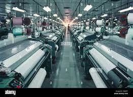
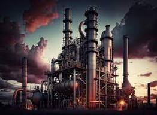
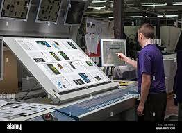

| |
INDUSTRIA
CHE COS'E ?
L'industria è un settore dell'economia che coinvolge la produzione di beni e servizi attraverso la trasformazione di materie prime o l'elaborazione di risorse. In generale, l'industria comprende diverse attività che vanno dalla produzione manifatturiera alla produzione di energia, all'edilizia, alla produzione di beni di consumo e altro ancora.
Le attività industriali coinvolgono solitamente processi di produzione su larga scala, utilizzando macchinari e tecnologie avanzate per aumentare l'efficienza e la produttività. L'industria è fondamentale per lo sviluppo economico di una nazione, contribuendo alla creazione di posti di lavoro, alla generazione di reddito e alla fornitura di beni e servizi essenziali.
L'industria può essere suddivisa in vari settori, come l'industria manifatturiera, l'industria estrattiva, l'industria energetica e così via. La sua importanza può variare da paese a paese in base alla struttura economica e alle risorse disponibili.
COME FUNZIONA ?
Il funzionamento dell'industria può variare notevolmente a seconda del settore specifico e del tipo di produzione coinvolta. Tuttavia, ci sono alcuni concetti chiave che sono comuni a molte attività industriali. Ecco una panoramica generale di come funziona l'industria:
Fase di progettazione e pianificazione: Prima di iniziare la produzione, le aziende industriali devono pianificare il processo. Questo coinvolge la progettazione dei prodotti, la scelta dei materiali e la determinazione dei metodi di produzione. In questa fase, vengono anche pianificati i costi, la logistica e altri aspetti operativi.
Acquisto delle materie prime: Le industrie devono acquisire le materie prime necessarie per la produzione. Queste possono essere risorse naturali, materiali grezzi o componenti necessari per la fabbricazione dei prodotti.
Produzione: Questa fase coinvolge la trasformazione delle materie prime o dei materiali grezzi nei prodotti finali desiderati. Può includere processi di produzione automatizzati o manuali, a seconda del settore e della complessità del prodotto.
Controllo di qualità: Durante e dopo la produzione, vengono eseguiti controlli di qualità per assicurarsi che i prodotti soddisfino gli standard stabiliti. Questo può includere test di laboratorio, ispezioni visive, prove funzionali e altri metodi di verifica della qualità.
Imballaggio e distribuzione: Dopo la produzione e il controllo di qualità, i prodotti vengono solitamente imballati in modo appropriato e distribuiti ai clienti. Questo può coinvolgere la logistica, la gestione delle scorte e la spedizione.
Manutenzione: Nell'industria, la manutenzione delle attrezzature e delle infrastrutture è fondamentale per garantire che i processi di produzione rimangano efficienti e sicuri nel tempo.
Innovazione e miglioramento continuo: Le industrie sono spesso impegnate nella ricerca e nello sviluppo per innovare e migliorare i propri prodotti e processi. Questo è cruciale per rimanere competitivi sul mercato.
ESEMPI NELLA STORIA:
Ecco alcuni esempi di industrie che hanno avuto un impatto significativo nella storia:
Industria Tessile durante la Rivoluzione Industriale: Nel corso del XVIII e XIX secolo, la Rivoluzione Industriale ha portato a importanti cambiamenti nell'industria tessile. L'introduzione di macchinari come il telaio a vapore ha trasformato la produzione di tessuti, portando a una maggiore efficienza e aumento della produzione.
Industria Automobilistica: La produzione di automobili ha rivoluzionato la mobilità nel XX secolo. Henry Ford, con l'introduzione della catena di montaggio nel 1913, ha reso la produzione di massa più efficiente e accessibile, portando all'espansione dell'industria automobilistica.
Industria Chimica: L'industria chimica ha conosciuto una crescita significativa nel XIX e XX secolo. Un esempio notevole è l'invenzione del processo di Haber-Bosch negli anni '10 del XX secolo, che ha reso possibile la produzione di ammoniaca su larga scala, fondamentale per la produzione di fertilizzanti e la crescita dell'agricoltura.
Industria dell'Informatica: L'emergere dell'industria dell'informatica, con la produzione di computer e componenti elettronici, ha rivoluzionato la società nel XX secolo. Aziende come IBM, Apple e Microsoft hanno giocato ruoli chiave nello sviluppo e nella commercializzazione di tecnologie informatiche.
Industria Aerospaziale: Dopo la Seconda Guerra Mondiale, l'industria aerospaziale ha conosciuto una crescita significativa. Aziende come Boeing, Airbus e Lockheed Martin hanno contribuito allo sviluppo e alla produzione di aeromobili e sistemi spaziali.
Industria Energetica: Settori come l'industria del petrolio e del gas hanno svolto un ruolo centrale nell'economia mondiale. La scoperta e lo sfruttamento di risorse energetiche, come il petrolio, hanno avuto un impatto significativo sull'industrializzazione e sullo sviluppo economico.
Industria della Tecnologia dell'Informazione (IT): L'industria IT, con aziende come Google, Microsoft, e Apple, ha guidato l'era dell'informazione nel XXI secolo, fornendo prodotti e servizi legati alla tecnologia, software e Internet.
INDUSTRIA CHIMICA
CHE COS'E ?
L'industria chimica è un settore dell'economia che si occupa della produzione di sostanze chimiche su larga scala. Queste sostanze chimiche possono includere una vasta gamma di prodotti, come fertilizzanti, pesticidi, detergenti, materiali plastici, farmaci, prodotti chimici per la lavorazione dei metalli e molto altro. L'industria chimica svolge un ruolo fondamentale in vari settori economici, contribuendo alla produzione di beni di consumo, alla medicina, all'agricoltura, all'edilizia e ad altri settori.
COME FUNZIONA?
Il funzionamento dell'industria chimica coinvolge una serie di fasi, processi e tecnologie complesse per la produzione su larga scala di sostanze chimiche. Ecco una panoramica generale di come funziona:
Ricerca e Sviluppo (R&D): Prima di intraprendere la produzione su larga scala di una nuova sostanza chimica, le aziende investono nella ricerca e sviluppo per comprendere la chimica coinvolta, sviluppare nuovi processi o migliorare quelli esistenti, e garantire la sicurezza e l'efficacia del prodotto.
Progettazione del Processo: Una volta identificato il processo chimico per la produzione di una specifica sostanza, gli ingegneri chimici lavorano sulla progettazione del processo. Questo implica la definizione delle fasi del processo, la scelta delle attrezzature, la definizione dei parametri operativi e la pianificazione della logistica.
Approvvigionamento di Materie Prime: L'industria chimica richiede un'ampia varietà di materie prime, che possono includere reagenti chimici, solventi, materiali di base, e altro ancora. L'approvvigionamento efficiente di queste materie prime è cruciale per il processo produttivo.
Produzione: Il cuore dell'industria chimica è la produzione delle sostanze chimiche desiderate. Questo può coinvolgere una serie di reazioni chimiche, separazioni, distillazioni, e altri processi specializzati. La produzione può avvenire in lotti o in modo continuo, a seconda del tipo di sostanza chimica e delle esigenze di produzione.
Controllo di Qualità: Durante la produzione, vengono effettuati controlli di qualità per assicurare che i prodotti soddisfino gli standard prestabiliti. Questo può includere analisi chimiche, test di laboratorio e verifiche della purezza.
Imballaggio e Distribuzione: Una volta prodotta, la sostanza chimica viene generalmente imballata in modo sicuro e distribuita ai clienti. L'imballaggio deve garantire la sicurezza durante il trasporto e la conformità alle normative di sicurezza.
Gestione dei Rifiuti e Sicurezza Ambientale: L'industria chimica pone una forte enfasi sulla gestione responsabile dei rifiuti e sulla sicurezza ambientale. Ciò include il trattamento dei sottoprodotti, la gestione dei rifiuti chimici, e l'adesione alle normative ambientali.
Manutenzione e Aggiornamenti: Le attrezzature e gli impianti dell'industria chimica richiedono manutenzione regolare per garantire il corretto funzionamento. Inoltre, possono essere necessari aggiornamenti per migliorare l'efficienza e la sostenibilità delle operazioni.
Conformità normativa: L'industria chimica è soggetta a rigide normative e standard di sicurezza. Le aziende devono essere conformi alle leggi e ai regolamenti riguardanti la produzione chimica, la sicurezza dei lavoratori e la tutela ambientale.
ESEMPI NELLA STORIA:
L'industria chimica ha una storia ricca e diversificata, con numerosi sviluppi e scoperte chiave nel corso dei secoli. Ecco alcuni esempi di eventi significativi nella storia dell'industria chimica:
Industria Chimica del XIX secolo: Durante il XIX secolo, l'industria chimica ha conosciuto una crescita significativa grazie a innovazioni come il processo Leblanc (1791) per la produzione di soda caustica e carbonato di sodio. Questi progressi hanno contribuito a soddisfare la crescente domanda di prodotti chimici di base per l'industria e l'agricoltura.
Processo Haber-Bosch (1910-1913): Fritz Haber e Carl Bosch hanno sviluppato il processo Haber-Bosch, che consente la produzione di ammoniaca su larga scala. Questo processo ha rivoluzionato la produzione di fertilizzanti e ha avuto un impatto significativo sull'agricoltura, consentendo una maggiore resa delle coltivazioni e alimentando la crescita della popolazione mondiale.
Sviluppo dell'industria farmaceutica (XX secolo): Nel corso del XX secolo, l'industria chimica è stata fondamentale per lo sviluppo di farmaci. L'introduzione di antibiotici come la penicillina (1928) da parte di Alexander Fleming ha rivoluzionato la medicina, aprendo la strada a trattamenti efficaci per molte malattie infettive.
Sintesi del polietilene (1930): La scoperta della sintesi del polietilene da parte degli scienziati britannici Eric Fawcett e Reginald Gibson ha portato alla produzione su larga scala di uno dei polimeri più comuni. Il polietilene è ampiamente utilizzato nella produzione di materiali plastici.
Sviluppo dei polimeri e della plastica (XX secolo): La ricerca sulla sintesi dei polimeri ha portato a sviluppi importanti nel campo delle materie plastiche, come il nylon (1935) e il polipropilene (1954). Questi materiali hanno avuto un impatto significativo in settori come l'abbigliamento, l'imballaggio e l'industria automobilistica.
Rivoluzione del petrolio e dell'industria chimica (XX secolo): L'estrazione e la raffinazione del petrolio hanno portato alla produzione di una vasta gamma di prodotti chimici, tra cui carburanti, solventi, lubrificanti, e materiali plastici. L'industria chimica è diventata sempre più integrata con l'industria petrolifera.
Sviluppo dei polimeri a cristalli liquidi (1970-1980): La scoperta dei polimeri a cristalli liquidi ha portato a importanti innovazioni nella produzione di schermi LCD (Display a Cristalli Liquidi), che sono ampiamente utilizzati in dispositivi elettronici come televisori e computer.
Green Chemistry (XXI secolo): Nel XXI secolo, c'è stata un'attenzione crescente alla sostenibilità e alla "Green Chemistry". Questo movimento mira a sviluppare processi chimici che riducano l'impatto ambientale e minimizzino la generazione di rifiuti tossici.
 Immagine che rappresenta un industria tessile  Immagine che rappresenta un industria chimica  Immagine che rappresenta un industria informatica |
 |